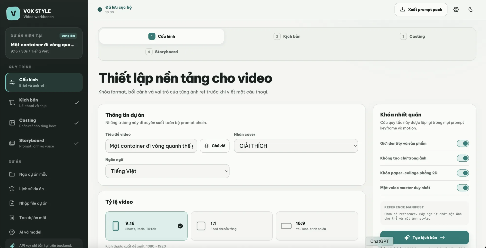

BRIEF
Chốt điều video phải làm
Đây là lúc bạn trả lời những câu hỏi đời thường. Chưa cần nghĩ đến hiệu ứng hay kỹ thuật.
- Tiêu đề: nói thẳng video giải thích chuyện gì.
- Người xem: ai cần hiểu câu chuyện này.
- Kết quả: xem xong họ nhớ hoặc làm điều gì.
- Khung hình: 9:16 cho TikTok, Reels; 16:9 cho YouTube.
- Ảnh tham chiếu: chủ thể, màu sắc, phong cách và logo.
Tôi muốn làm video [30 giây] về [chủ đề], dành cho [người xem]. Sau video, họ cần hiểu [kết quả]. Hãy giúp tôi viết brief ngắn và hỏi lại nếu thiếu dữ kiện.
